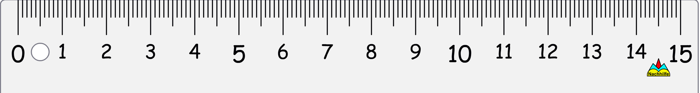
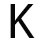
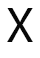

10.1 Identifying lines of symmetry for different figures



Draw a rectangle ABCD.
Divide the rectangle into two equal parts.
a) How many different ways can rectangle ABCD be divided?
b) i)What is the special name given to the lines you have drawn in a) above?
ii)Explain your answer above.
c) Label the intersection of the vertical line drawn with AB and DC as K and P
respectively.
d) Label the intersection of the horizontal line drawn with AD and BC as X and Y
respectively.
c) Compare the shapes:
i) AKPD with KBCP:
ii) ABYX with YCDX: